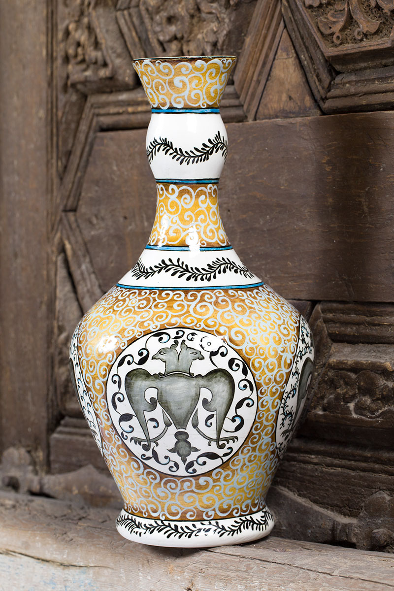

|
|
Hakkımızda |
 |
1996 yılından beri İznik’te hizmet veren işletmemiz, 2011 yılında İznik çinilerinin Türkiye'den ve dünyadan ulaşılabilmesini sağlamak amacıyla, “Çini Evi” markasıyla www.cini.com.tr ’yi kurmuştur.
Çini Evi Türkiye’de ki en büyük çini mağazasıdır.
Kişisel hediyeler, bakanlıklar, şirketler, belediyeler ve birçok kurum ve şirketin siparişlerinin kusursuz tesliminin yanında, sitemizden almış olduğunuz ürünleri aynı gün kargo teslimi yaparak müşterilerimizin bir nevi imdadına koştuk ve koşmaya da devam ediyoruz.
2014 yılında yurt dışı alt yapısını tamamladık ve yurt dışındaki müşterilerimizin de zahmetsizce ürünlerimize ulaşmalarını sağladık.
Her geçen gün müşteri portföyümüzü geliştirmeye devam etmekte ve sizin için çalışmaya hazırız.
Çini Tarihçesi ve Türk Çini SanatıGeleneksel çini sanatı ustaların teknikleri ile günümüzde varlığını sürdürmeye devam ediyor. Süsleme için kullanılan, bir yüzü sırlı ve genellikle çiçek resimleriyle bezeli, pişmiş, balçık levha anlamına geliyor çini. Çini için Asurlular zamanına kadar uzanan bir tarihçesi olduğundan bahsedilir. Türkler’ de ise ilk örnekleri Karahanlılar zamanında görülmektedir. İlk çini örnekleri eski Mısır ve Mezopotamya bölgelerinde tuğla üzerine renkli sır uygulanması ile ortaya çıkmıştır. Orta Asya’ da yapılan çalışmalarda 8. yüzyıl’ da Türkler’ in pişmiş topraktan çanak yaptıklarına rastlanmıştır. Sır kullanılarak yapılan teknikler Türkler’in İslamiyet’ i kabulünden önce Uygurlar tarafından da kullanılmıştır. Türkler’ de çini sanatı çok eski olmakla birlikte asıl gelişmeler Anadolu Türkleri zamanında olmuştur. Anadolu Selçukluları ve Büyük Selçuklular ile yeni teknikler uygulanarak gelişen bu sanat Osmanlı ile beraber sanat günümüze kadar ulaşmıştır. Anadolu Selçukluları sırlı levhalar ve mozaik tekniklerinde siyah, mor, kobalt mavi ve firuze renkleri kullanmışlardır. İran’ da mozaik çini sanatı kullanılmış olup 14. ve 15. yüzyılda İlhanlılar ile büyük bir gelişme kat etmiştir. Anadolu’ da İlk ÖrneklerAnadolu’ da çini süsleme sanatının en önemli ve ilk örneklerinden biri Sivas’ ta bulunan Selçuklu Sultanı I. İzzeddin Keykavus’un (1211-1220) bulunduğu Keykavus Darüşşifâsı’ndaki türbedir. Geometrik çini süslemelerinin olduğu türbede levha çinileri ve mozaik çinilerin en güzel örnekleri yer almaktadır. 13. yüzyıldan kalma Eski Malatya Ulucamii çinileri de dönemin başarılı çalışmaları arasındadır. En eski sayılabilecek örnekler arasında Siirt Ulu Camii ve Minaresi (12. yüzyıl), Sivas Divriği Kale Camii’nin kapısı (1180) ve Konya II. Kılıçarslan Türbesi yer alır. Anadolu Selçukluları’ nın yerleşim yeri Konya’ da Alaeddin Camii’nin mihrap kısmı, Sırçalı Medrese’nin eyvan kısmı, Karatay Medresesi, Sahib Ata Külliyesi ve Sivas Gökmedrese, Anadolu Selçuklu Sultanı Alâeddin Keykubad (1221-1237) tarafından yaptırtılan Kubad Abad Sarayı seçkin çini ve mozaikleri ile ünlüdür. Osmanlı Çini SanatıOsmanlı’ da renkli sır tekniği ile yapılan çini sanatının ilk ve en güzel örneklerinden biri Bursa’ da bulunan Çelebi Sultan Mehmet Cami ve türbesi ile Yeşil Cami’ dir Ayrıca Edirne’ de bulunan 1436 tarihli Muradiye Cami mihrap ve duvarlarında renkli sır ve çini mozaik kullanılmıştır. Muradiye Cami’nde şeffaf sıraltı tekniği ile mavi ve beyaz renkler kullanılmıştır. Bu dönemde desenlerde Baba Nakkaş üslubu da kullanılmış ve mavi beyaz tekniği 17. yüzyıl ortalarına kadar devam etmiş ve 16. yüzyılda daha gelişen Osmanlı çini sanatında çok daha zengin özellikler ortaya çıkmıştır. Kanuni Sultan Süleyman tarafından babası Yavuz Sultan Selim için Edirne’ de yapılan Selimiye Cami’nde geometrik desenli çiniler kullanılmıştır. İznik çinilerinin önemli bir yer teşkil ettiği bu dönemde çok renkli sır tekniği geliştirilmiştir ve mercan kırmızısı renkler çinilerde kullanılmaya başlanmıştır. İlk defa İstanbul Süleymaniye Camii’nde mercan kırmızısı kullanılmıştır. Çini sanatında bir çok tekniğin kullandığı ve çok önemli bir yere sahip olan Rüstem Paşa Camii’ nde 41 çeşit lale motifinin olduğu söylenir. İznik çini atölyelerinde bir çok rengin sıraltı tekniği ile işlenmesi sağlanmış lale, karanfil, zambak gibi çiçek motifleri kullanılarak sanat en görkemli haline ulaşmıştır. |
PolitikalarGizlilik Politikasıİade Politikası Çerez Politikası Kargo ve Gönderim Politikası Kullanım Şartları |
Daha fazla hava durumu tahmini: 30 gunluk hava durumu Ankara
|